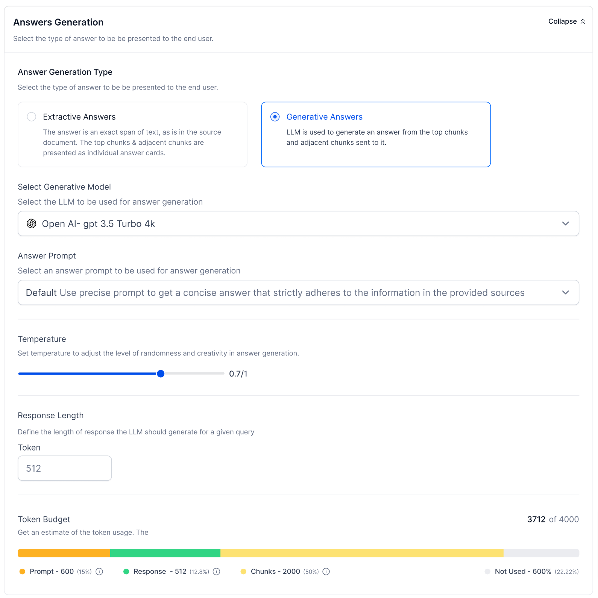

The words SearchAssist and Answers are interchangeably used.
|
Sources
|
|
|
Document Chunking
|
|
|
Answer Retrieval
|
|
|
Answer Generation
|
|
|
Evaluation and Guardrails
|
Kore.ai has built SearchAssist product to offer “conversational search” experiences for enterprises. The key value proposition was to offer ‘search first’ and ‘chat first’ experience and allow the enterprises to choose how to deploy the search. It was closely integrated with ‘XO Platform / Automation’ so that the customers can seamlessly deploy these two products together.
With the advent of LLM/GenAI capabilities, the Retrieval Augmented Generation (RAG) architecture has opened a new world of opportunities in the ‘search industry’. SearchAssist was able to quickly adopt this framework and has moved towards “answers” as the primary capability. .
SearchAssist simplifies finding answers by bringing together different data types from various sources in an organization – like the company website, third-party apps, blogs, help centers, and product catalogs. It handles diverse content formats such as webpages, documents, and media files. For example, product details might be on the website, terms and conditions in PDFs, and customer inquiries through apps like Zendesk. SearchAssist makes this easier by letting users quickly access comprehensive information through the ingestion of various data types. Users can extract data from files, web pages, and third-party apps, providing a seamless search experience. The platform supports content ingestion from multiple sources, including web domain crawling, directory uploads (PDF, docx, ppt), and extraction from apps like ServiceNow, Confluence, Salesforce, Zendesk, Google Drive, SharePoint, Oracle Knowledge Advanced, Azure Storage, and Dropbox through connectors. To manage, update, or explore data in SearchAssist, users can go to the Sources tab. Data is periodically refreshed, ensuring answers are generated from recent content.
SearchAssist empowers users to extract data effortlessly from files, web pages, and third-party applications, delivering a unified search experience.
Our platform supports seamless content integration from various sources, including web domain crawling, file uploads (PDF, docx, ppt), and data extraction from applications like ServiceNow, Confluence, Salesforce, Zendesk, Google Drive, SharePoint, Oracle Knowledge Advanced, Azure Storage, and Dropbox through connectors.
Data is regularly refreshed, ensuring that the answers generated are derived from the most recent content. Stay up-to-date with the latest information effortlessly.
Easily manage, update, and explore data in one centralized location – the Sources tab. This user-friendly interface allows you to harness the power of data from different sources within your company efficiently.
By streamlining the retrieval process and offering a unified search experience, SearchAssist saves valuable time and enhances productivity. No more navigating through multiple platforms or applications – get the information you need, when you need it.
SearchAssist streamlines web data management for organizations by enabling the efficient ingestion of web content through regular web crawling. Recognizing the challenges posed by extensive websites with numerous pages and links, SearchAssist ensures that indexed data and information appear in user search results, eliminating the need for tedious manual navigation.
Users can easily add new web sources to their applications, configuring crawling parameters for optimal results. SearchAssist supports various methods, including providing a URL, uploading sitemaps, or uploading URLs in CSV format. The platform offers advanced crawling configuration options, allowing users to specify crawl depths, maximum URL limits, and schedules for periodic recrawls, ensuring up-to-date search results.
Webcrawl also facilitates the addition of rules for selective crawling, catering to specific needs such as crawling everything, excluding specific URLs, or crawling only specific URLs. Users can configure crawl settings for cookies acceptance, JavaScript rendering, and adherence to robots.txt directives. Additionally, SearchAssist supports authentication mechanisms, including Basic HTTP authentication and Form-based authentication.Continuous optimization is a key feature, allowing users to edit configurations, view execution status and logs, and perform manual or scheduled recrawls. Efficient deletion mechanisms for entire sources or individual pages ensure that irrelevant information is excluded from search results, with rules in place to prevent reappearance during recrawling. Overall, SearchAssist provides a user-friendly and comprehensive solution for organizations seeking effective web data management.
SearchAssist's core functionality revolves around the seamless ingestion of web content through periodic web crawling. This not only simplifies data searches but also ensures that the most relevant and up-to-date information appears in search results.
Tailor the crawling experience according to your needs with SearchAssist's comprehensive configuration options. From defining crawl depths to setting maximum URL limits and scheduling periodic recrawls, the platform puts control in the hands of administrators, ensuring a finely tuned and efficient crawling strategy.
SearchAssist supports various methods to add sources for crawling, including URL provision, sitemap uploads, and URL uploads through CSV files. This versatility extends to crawl options, allowing users to crawl and index all URLs, selectively crawl specific URLs, or exclude particular URLs for optimized indexing.
Refine the crawling process with advanced settings such as the ability to crawl web pages requiring cookie acceptance, rendering content through JavaScript code, and crawling beyond sitemap-defined URLs. Respect for robots.txt directives ensures ethical crawling practices.
Navigate authenticated websites effortlessly with SearchAssist's support for both Basic HTTP authentication and Form-based authentication mechanisms. Users can configure authentication parameters, including usernames, passwords, and additional authorization fields, adapting to diverse authentication scenarios.
Gain deep insights into the crawling process through detailed execution status and logs. Users can track each step of the execution, ensuring transparency and facilitating informed decision-making.
Answers offers a convenient "Directory Upload" feature to enhance the accessibility of business information stored in various fileforamts like PDFs, docx, ppt, xlsx.etc. Users have flexibility in uploading files, with options to upload single files from a local device or URL, as well as the capability to upload multiple files concurrently from a designated directory. The uploaded files are systematically organized into directories within the SearchAssist application, with a default directory available for storing individual files. Upon successful upload, files are automatically indexed, ensuring their immediate availability for search queries.
Answers supports various file formats, including PDF, DOCX, PPT, XLSX, JPEG, PNG, and TXT, allowing users to upload and extract data seamlessly. However, it's important to note that scanned PDFs and password-encrypted PDFs are currently not supported by this feature.
For enhanced management and insight, users can view detailed information about a directory by clicking the ellipses icon and selecting "details." This provides a comprehensive overview, including the description of the directory, the user who created it, creation and last update dates, as well as statistics such as the total number of files and records within the directory. Overall, the "Directory Upload" feature in SearchAssist empowers users to efficiently organize and access diverse business information with ease.
Users can seamlessly import content into the SearchAssist/answers from a variety of sources and repositories, including ServiceNow, Microsoft SharePoint, Atlassian’s Confluence, Google drive, and more, utilizing the dedicated connectors offered by SearchAssist/Answers
Custom connectors provided by SearchAssist are designed to facilitate the crawling of specific third-party content management applications, CRM systems, web database applications, or cloud-based applications. The configuration allows SearchAssist to establish connections with multiple systems simultaneously, with each third-party application requiring its own connector. However, each source within a third-party application only necessitates a single connector.
Upon establishing a connection, the connector enables SearchAssist to authenticate and retrieve data from the third-party application. The fetched data is then processed for subsequent indexing. Importantly, the access privileges associated with the content, such as viewing, commenting, or editing, adhere to the user's permissions in the third-party repository.
SearchAssist comes equipped with default connectors for many widely used applications. Should you have specific integration requirements beyond the default offerings, please reach out to accommodate your unique needs.
Answers provides support for over 100 connectors, offering users a seamless experience in ingesting information into the platform. This extensive array of connectors enhances the accessibility and integration of diverse data sources within Answers, ensuring a comprehensive and user-friendly data ingestion process.
The primary purpose of scheduled sync is to automate the process of data synchronization between SearchAssist and third-party applications. Instead of manually triggering data updates, users can set up a schedule, and the connectors will automatically initiate the synchronization at the specified times.
Users can configure SearchAssist to connect to multiple systems simultaneously, and each third-party application typically requires its own custom connector. This configurability ensures flexibility in handling different sources and repositories.
Authentication and authorization mechanisms in connectors verifys the identity of a user or system connecting to a third-party application through a connector. These mechanisms are essential for secure access to external data.
Key points about authentication mechanisms:
When a connector connects to a third-party app, it provides credentials (username, password, or additional factors like API keys). This ensures authorized access to external data.
OAuth2.0: OAuth2, a widely used authorization framework, enables a connector to access a third-party app on behalf of a user without exposing their credentials. This is particularly useful for scenarios involving user-specific data.
Answers provides users with precise and customizable chunk extraction. Its Chunk Extraction Strategies offer granular configuration, optimizing workflows for diverse business needs. The innovative Chunk Extraction Models, including Text, Rule-Based, Layout-Aware, and Summary Extraction, utilize advanced techniques for accurate results. The Chunk Browser ensures correctness, allowing users to verify and edit extracted chunks. The Chunk Workbench's customizable pipeline stages offer flexibility and simulation capabilities. The Document Layout Studio enhances layout management, and Vectorization & Indexing provide tailored embeddings for focused search. In essence, Answers Platform delivers increased precision, adaptability, and efficiency in information extraction and management. Find the details of
Users can configure different extraction strategies, providing granular control tailored to specific business requirements.
Within the extraction pipeline, users configure each strategy b choosing documents and specifying extraction models, optimizing the extraction workflow.
User-driven document selection and strategic extraction model choices enhance precision by aligning with document characteristics.
The system supports defining multiple extraction strategies, offering adaptability to diverse
document types and extraction scenarios.
The Chunk Browser serves as a vital tool within the information extraction system, offering users a comprehensive view of the extracted chunks from the source data. This functionality not only provides insights into the output generated by the extraction process but also empowers users to take subsequent actions, such as editing and rectifying the chunks. Find the details of the Key capabilitires:
Users can use the Chunk Browser to observe and verify the extracted chunks. This step is crucial for ensuring the correctness of the extraction process, allowing users to inspect whether the identified chunks align with their expectations.
The Chunk Browser equips users with the ability to inspect the correctness of the extracted chunks. This inspection ensures that the information extracted is accurate, and no crucial data is lost during the chunk extraction process.
An essential feature of the Chunk Browser is its editing functionality. Users can edit the chunk information directly within the browser interface. This capability becomes particularly valuable when there is a need to correct any inaccuracies in the extracted information.
If the extraction process incorrectly identifies or misses certain information, users can rectify these issues by editing the chunks. This ensures that the extracted data aligns more closely with the user's requirements and the intended goals of the extraction process.
Users have the flexibility to add information that might have been missed or skipped during the initial extraction. This feature enhances the adaptability of the system, allowing users to supplement and enhance the extracted data as needed.
The Chunk Workbench functions as a pivotal component in the data processing pipeline, systematically handling ingested chunks through a sequence of stages collectively referred to as the Chunk Pipeline. This pipeline is instrumental in transforming raw, ingested chunks into refined counterparts that are prepared for indexing
The Chunk Workbench employs a series of stages, constituting the Chunk Pipeline, to process ingested chunks. This processing involves a sequence of steps where each stage executes specific data transformations.
Each stage in the pipeline allows for customization of data transformations based on business needs. Configuration parameters for each stage can be adjusted, enabling tailored modifications to suit specific requirements.
Users have the ability to employ a simulator for testing configurations at each stage individually. This feature facilitates the evaluation of the cumulative impact of various stages on the data transformation process.
The Workbench provides flexibility in rearranging or sequencing stages according to user preferences or specific project requirements. This adaptability ensures a customized and efficient data processing workflow.
This stage involves mapping fields within the Chunk Pipeline to a target field. Users can set values, copy values, remove fields, rename fields, and perform other field-related operations.
Utilizing Natural Language Processing (NLP) techniques, this stage identifies named entities within the chunk field. Examples include extracting dates or geographic locations from the chunk
The Custom Script stage empowers users to input customized scripts, enabling a range of operations on fields such as deletion or renaming.
This stage allows configuration of prompts for data enrichment using third-party Language Model Models (LLMs).
The Exclude stage is designed to drop all chunks that match specified conditions, providing a mechanism for selective data exclusion.
This stage automatically detects and extracts important words stored in a field, enhancing the identification of crucial information within the chunks.
The Document Layout Studio serves as a specialized tool, granting users advanced capabilities for managing the layout and structure of extracted content. The Document Layout Studio offers a suite of tools to fine-tune the presentation and structure of extracted content, providing users with a versatile and efficient means to optimize the output for further processing or analysis.
The tool empowers users to achieve precision in managing the layout of extracted content, ensuring accurate representation and alignment.
Users can eliminate overlaps in chunks, addressing potential issues that may arise during the extraction process and enhancing the overall quality of extracted information.
Direct text editing capabilities enable users to customize extracted content as needed, adapting it to specific requirements or preferences.
The ability to set up links between chunks promotes an enhanced and interconnected representation of content, fostering a more comprehensive understanding of relationships within the document.
Answers offers users the flexibility to choose the embeddings model for vector generation based on their specific needs and use cases.
Users can select from a range of supported embeddings models such as MPNet, LaBSE, e5, and more. This variety ensures compatibility with diverse requirements and preferences.
Furthermore, Answers facilitates business users in ingesting their own embeddings into the answer index. This capability enhances adaptability, allowing users to leverage proprietary models tailored to their unique contexts.
Users have the autonomy to choose the specific chunk fields on which embeddings are to be generated. This strategic selection empowers users to focus on fields that hold higher relevance to their particular use case.
By generating embeddings on fields with higher relevance, the vectorization process ensures that the embeddings carry comprehensive information. This, in turn, enables effective searching based on user queries.
Tailored Model Use
Users can align vectorization with their specific requirements by selecting the most suitable embeddings model. This customization ensures that the generated vectors capture the nuances of the data in line with the intended applications.
Diverse Model Support
The availability of multiple supported models expands the range of possibilities, allowing users to choose models that align with the characteristics and intricacies of their data.
User-Defined Embeddings
The capability to ingest custom embeddings empowers businesses to integrate domain-specific knowledge into the vectorization process, enhancing the relevance and accuracy of search results.
Focused Vectorization
By enabling users to choose relevant chunk fields, the vectorization process becomes focused and tailored to the specific aspects of the data that matter most. This ensures that the generated embeddings are optimized for search queries, enhancing the precision of information retrieval.
The retrieval system incorporates advanced features for precise and efficient information retrieval. Query Rewriting, with techniques like rephrasing and chat history analysis, refines user queries. The Multiple Question Generator handles complex inquiries by generating nuanced sub-questions. Retrieval Strategies, including various retrieval score types and configurable Chunk Types, offer technical users granular control over the retrieval process. The Re-ranking feature, using Cross-Encoders, enhances relevance assessment by capturing semantic relationships and adapting to diverse data types and retrieval tasks. Overall, these technical features collectively contribute to a sophisticated and customizable information retrieval experience.
Query rewrite involves combination following techniques-
"What are the best budget-friendly hotels near famous attractions in these regions?"
"What are budget-friendly hotel options near popular attractions in Europe and Asia?
The use of query rewriting, particularly through the Re-Phrase Query Generator, leads to refined and more focused queries. By eliminating irrelevant details and extracting essential information, the rewritten queries are optimized for accuracy and efficiency in retrieving relevant data from the vector store. This results in a more precise and targeted response to user queries.
Query rewriting based on chat history introduces a contextual adaptation element. By considering the user's past interactions and query history, the system dynamically adjusts the current query to align with the user's intent and preferences. This approach significantly enhances the relevance of responses, providing a more personalized and contextually appropriate user experience.
The flexibility offered to users in determining how queries should be rephrased and the option to specify the number of previous queries or conversations used for rewriting provide a high level of user control. This empowers users to tailor the system's behavior to their preferences, contributing to a more user-centric and adaptive interaction.
The Multiple Question Generator streamlines the handling of complex user inquiries involving multiple data sources. By breaking down intricate queries into sub-questions tailored to specific data sources, this approach ensures specificity and relevance. The nuanced generation of multiple sub-questions allows for a comprehensive response to diverse aspects of the user's overarching question, enhancing the efficiency of information retrieval.
The Sub-Question Generator, as part of the Multiple Question Generator, facilitates a systematic retrieval of relevant information from different data sources. This not only ensures that various aspects of the user's query are addressed but also contributes to a more thorough and comprehensive response. The structured approach to handling complex queries results in a more detailed and insightful set of answers.
This mechanism combines various approaches, such as vector retrieval and keyword retrieval, to enhance the overall retrieval process. It leverages the strengths of different methods for a more comprehensive and accurate retrieval score.
Utilizing vector representations of chunks, this method assesses the similarity between the user query and chunks in the collection. Vector retrieval is effective in capturing semantic relationships and is suitable for scenarios where understanding context is crucial.
Focused on keyword matching, this retrieval type evaluates the presence and frequency of specific terms in both the user query and chunks. It is efficient for scenarios where keyword relevance is a primary factor in determining retrieval scores.
In the realm of advanced language models, the Answers platform emerges as a powerhouse, seamlessly integrating both Commercial LLMs and custom models for unparalleled flexibility. Pre-built LLM integrations with industry leaders like OpenAI and Azure OpenAI empower users to effortlessly connect with these models, requiring minimal configurations and allowing quick integration through API keys. This streamlined approach ensures users can harness the capabilities of renowned commercial models with ease. The platform goes a step further by supporting Custom LLM Integrations, enabling users to seamlessly incorporate proprietary or specialized language models by configuring authorization methods, endpoints, and request bodies. This flexibility enhances adaptability, catering to users with specific requirements or proprietary models.

Answers has predefined prompts and custom prompts for answer generation using LLM
Predefined answer prompts for users to choose from
The Default Prompt is a standard template designed to generate answers that align with the information present in the given sources. It provides a straightforward and general approach for obtaining relevant responses.
The Multilingual Prompt is specifically crafted for generating answers in multiple languages. This template includes few-shot examples relevant to multilingual answering, allowing the LLM to understand and respond appropriately to queries in various language contexts.
The Contextual Prompt builds upon the components of the Default Prompt by also incorporating the user's chat history. This additional context is sent to the LLM for answer generation, enabling the model to consider the user's past interactions. This feature is beneficial for maintaining context continuity in ongoing conversations and enhancing the relevance of generated answers.
The Personalized Answers Prompt takes customization a step further by including user context along with the components of the Default Prompt. This personalized context is sent to the LLM to generate answers that are tailored to the individual user's preferences or requirements. It ensures a more personalized and user-specific response.
Users have the flexibility to create entirely new prompts from scratch, tailoring the input to meet specific requirements. This feature allows users to have full control over the prompt content and structure, enabling a highly customized interaction with the LLM.
GPT Cache aims at enhancing language model performance and efficiency by seamlessly integrating advanced caching mechanisms. Its primary objective is to optimize the retrieval process of relevant information by strategically storing precomputed embeddings and their corresponding similar vectors.
The Cache Storage component acts as the central repository for vectors and their associated similar vectors. This critical element stores these pairs as key-value entries, meticulously arranging them in descending order based on their distance or similarity. This organizational strategy enables the system to swiftly retrieve the most relevant and similar vectors during the processing of user queries, contributing to an expedited and optimized retrieval process.
In the query processing phase, the Cache Retrieval functionality comes into play. This feature is designed to determine whether a given vector already exists in the cache storage. By proactively checking for vector existence, the system can efficiently identify and retrieve previously stored vectors, potentially eliminating the need for redundant computations. This proactive approach further enhances the overall efficiency of the system.
At the core of the GPT Cache system is the Language Model (LLM), a pivotal component responsible for responding with relevant paragraphs. The LLM receives a contextually relevant paragraph, typically extracted from a larger document corpus, and generates responses based on the user query and provided context. Leveraging sophisticated language understanding capabilities, the LLM ensures the delivery of accurate, contextually appropriate responses, ultimately elevating the overall user experience.
GPT Cache significantly reduces LLM query latency by efficiently caching responses. This results in faster retrieval of previously accessed information, providing users with an enhanced experience characterized by quicker response times.
Through the strategic caching of LLM responses, GPT Cache minimizes the number of API calls. This reduction in API calls translates to cost savings, particularly in scenarios where language model services operate on token- or request-based pricing structures.
GPT Cache offloads work from the LLM service, ensuring peak efficiency even as the number of requests grows. This heightened scalability is crucial for applications experiencing surges in traffic or usage, providing a seamless and responsive experience for users.
Users can access detailed debug information pertaining to the answer generation process. This information may encompass intermediate steps, transformations, or computations executed by the system during the generation of an answer. It offers transparency into the decision-making process of the system.
The tool furnishes insights into the interaction with the underlying language model (LLM). Users can observe how the model processes input queries, the context it considers, and the factors influencing the final generated answers. This proves valuable for comprehending the model's behavior in specific scenarios.
By gaining insights into the inner workings of the answer generation pipeline, users can endeavor to optimize performance. This might involve refining queries, adjusting parameters, or implementing changes to the data processing to enhance the efficiency and accuracy of answer generation.
In the Response tab, users gain access to the LLM model's response in JSON format, offering a detailed view of the generated answer. For a comprehensive JSON display of all information under the Answer tab, users can utilize the JSON view link. This organized functionality empowers users to navigate and utilize the Answer Debug Tool with clarity and efficiency.
This metric gauges the signal-to-noise ratio within the retrieved context. It calculates the proportion of pertinent information compared to irrelevant details. A high context precision indicates the retriever's adeptness at selecting the most relevant information for the LLM to utilize.
Focusing on the completeness of the retrieved context, this metric measures the percentage of relevant information successfully brought to the LLM from the entire knowledge source. A high context recall suggests that the retriever captures all significant information, ensuring the generation of a comprehensive and accurate answer.
Evaluating the factual accuracy and adherence to the retrieved context, this metric compares the generated answer to the retrieved information. It assesses how faithfully the answer reflects the provided sources. A high faithfulness score indicates that the LLM avoids introducing misleading or irrelevant information into the response.
This metric assesses the relevance of the generated answer to the original question. It evaluates how effectively the answer addresses the user's query and fulfills its intended purpose. A high answer relevance score signifies that the LLM comprehends the question's intent, providing a meaningful and satisfactory response.
Guardrails ensure the responsible use of Language Models (LLMs) and provide accurate responses, fact-checking, safety, and topical guardrails collectively contribute to the ethical deployment of LLMs. These guardrails play a pivotal role in the development process, fostering responsible utilization of language models across various applications.
The fact-checking guardrail is a crucial component of ensuring the accuracy and reliability of answers generated by Language Models (LLMs). Its primary purpose is to verify the factual correctness of information provided by the LLM. This guardrail involves cross-referencing generated content against trusted sources or databases to identify and rectify any inaccuracies or false claims. By implementing fact-checking guardrails, developers aim to enhance the credibility and trustworthiness of the LLM's responses.
Cross-referencing generated content against trusted sources to identify and rectify factual errors or false claims.
An LLM claims that the capital of France is London. The fact-checking guardrail would verify this information and correct it to Paris.
Definition: Bias refers to answers with a partiality or inclination towards a specific viewpoint, group, or set of values, often resulting in an unfair or unbalanced representation.
Example: An LLM asked to provide information about different cultures uses biased language describing certain groups as "primitive" or "backward."
Definition: Harmfulness signifies answeer with a potential to cause physical, emotional, or psychological harm to individuals or entities.
Example: An LLM responding to a query about weight loss suggests dangerous methods like extreme fasting or unhealthy diet pills.
Definition: Toxicity involves LLM using offensive language or spreading hate speech. Toxicity guardrails keep such negativity at bay.
Example: An LLM responding to a user's emotional expression with dismissive or mocking language.
Safety guardrails serve as a proactive mechanism to filter out answers that may pose risks to users or violate safety standards. These guardrails are designed to identify and prevent the generation of answers that could be considered harmful, inappropriate, or unsafe.
Topical guardrails are implemented to confine the LLM's responses within predefined topics or conext. By doing so, users aim to enhance the specificity, accuracy, and relevance of the generated answers.
Confining the LLM's responses to predefined topics or context to ensure specificity and accuracy.
A user asks about scientific advancements in renewable energy. The topical guardrail would prevent the LLM from rambling about politics or unrelated technologies.
Ensuring that the LLM provides answers that align with the intended subject matter.
Restricting the generation of responses outside the specified topics, preventing the LLM from straying into irrelevant or off-topic territory.
Improving the overall precision and focus of the LLM by limiting its scope to specific domains or context.